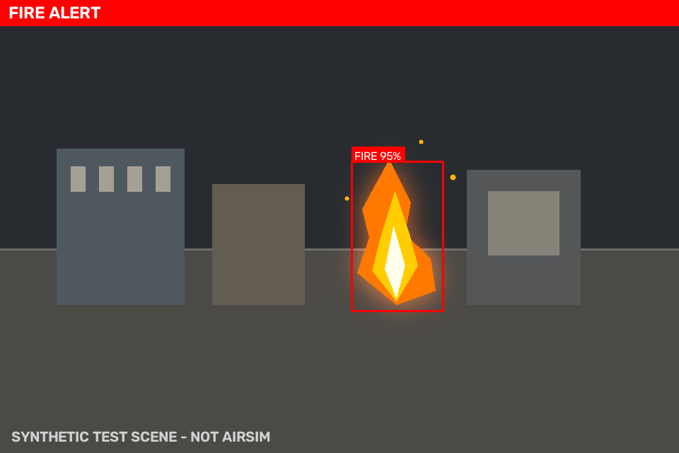

无人机火灾探测与自主巡检（fire_detection_drone）
森林与建筑场景的早期火情发现依赖区域覆盖和现场确认。本实验以无人机为平台，把相机火灾检测、搜索航点生成和任务状态管理组合成一条可复现的自主巡检流程：无人机按几何航线搜索，检测到火焰后悬停确认、盘旋取证，再返航或降落。
功能包参考开源仓库
michael-2509/fire-detection-drone
的 AirSim 取图、目标检测过滤和无人机速度/偏航控制流程，重构为感知与控制解耦的 ROS 2
Python 功能包：检测节点只订阅标准相机图像，巡检节点只发布标准速度指令，检测与状态机
逻辑放在无 ROS 依赖的纯 Python 模块中。源代码位于 src/air/fire_detection_drone/，
依赖安装、构建命令、Launch 参数和话题接口见该目录的 README.md。

合成图像检测结果，由
src/air/fire_detection_drone/tools/make_demo_image.py生成。
1. 实验目标
- 理解从图像颜色特征到火灾候选框，再到稳定报警的判定过程；
- 理解弓字形、矩形边界和螺旋三类几何航线如何覆盖搜索区域；
- 掌握巡检任务从搜索、确认、取证到返航的状态迁移条件；
- 通过话题观察检测结果、飞行指令与任务状态之间的对应关系。
2. 任务设计与数据流
系统分为感知、任务决策和执行三层：
fire_detector订阅相机图像，输出火灾警报、目标框、目标方位角、标注图和 JSON 状态；drone_explorer订阅警报和位姿，运行确定性状态机，输出机体系速度、降落请求和任务状态；- 两层只通过标准 ROS 2 消息交互，更换仿真器或飞控桥接时不需要修改检测与决策逻辑。
3. 火灾检测与报警判定
火焰在 HSV 空间中表现为高亮度、高饱和度的橙黄色至红色区域。检测器按橙色/黄色主区间 和红色环绕区间生成掩膜，经形态学开闭运算去除噪点，再按连通域面积、长宽比过滤，并用 IoU 非极大值抑制合并重叠候选。
单帧颜色命中的误报率较高，因此节点要求连续 min_consecutive_frames 帧命中才置位警报；
检测丢失后保持 alert_hold_sec，图像中断超过 image_timeout_sec 则清除警报。若提供
ONNX 二分类器，检测器对每个候选 ROI 做复核，并按 model_weight 融合两路置信度，模型
加载失败时退回纯 HSV。
检测结果通过 /fire_detection/bbox 输出，8 个元素依次为 x_min、y_min、x_max、
y_max、confidence、center_x、center_y、area_ratio。前四项为像素坐标，
center_x、center_y 为归一化后的目标中心，无目标时数组为空。确认阶段使用
center_x 计算偏航修正，使火灾保持在画面中央。
4. 搜索场景与航点生成
| 模式 | 适用场景 | 航点生成方式 |
|---|---|---|
lawnmower |
大面积开阔区域 | 在搜索矩形内按 lane_spacing 往返覆盖 |
perimeter |
建筑或作业区边界 | 沿矩形四边循环 |
spiral |
起飞点附近局部搜索 | 从中心向外扩展的阿基米德螺旋 |
search_width、search_height 定义搜索矩形，默认 12.0 m × 8.0 m；spiral 以两参数
较小值的一半作为最大半径，spiral_turns 控制圈数，默认 3.0 圈。三者均为 Launch 参数，
可在命令行覆盖，无需修改配置文件。
5. 任务状态机
PATROL：依次飞向搜索航点；收到警报后转入CONFIRM。CONFIRM：悬停并按目标框中心偏航对准；警报消失超过alert_grace_sec判为误报， 回到PATROL；持续确认confirm_hover_sec后进入EVIDENCE。EVIDENCE：原地低速偏航约一周（evidence_yaw_rate×evidence_sec），记录现场后 返回 home；默认取证 12 s。RETURN_HOME：按起飞时记录的 home 位置返航；到达容差内后按land_after_return选择 降落或悬停。LAND：发布一次/drone/land，任务结束。
任务总时长超过 max_mission_sec 或收到 /fire_detection/abort 时，状态机从任意活动状态
转入 RETURN_HOME。require_odometry 为 true 时，位姿超时立即停车并保持等待。
6. 实验步骤
环境：Ubuntu 22.04 LTS + ROS 2 Humble + Python 3.10。依赖安装与 colcon 构建见
src/air/fire_detection_drone/README.md。以下命令在已执行 source install/setup.bash
的工作空间中运行。
6.1 弓字形覆盖
ros2 launch fire_detection_drone fire_detection_drone.launch.py \
exploration_pattern:=lawnmower search_width:=16.0 search_height:=10.0
无人机在 16.0 m × 10.0 m 的区域内往返。无警报时 /fire_detection/mission_status 的
state 保持 PATROL，航点序号随飞行递增。
6.2 矩形边界巡检
ros2 launch fire_detection_drone fire_detection_drone.launch.py \
exploration_pattern:=perimeter search_width:=12.0 search_height:=12.0
航点沿搜索矩形的四个角点循环，适合沿建筑外墙或作业区边界飞行。
6.3 螺旋局部搜索
ros2 launch fire_detection_drone fire_detection_drone.launch.py \
exploration_pattern:=spiral search_width:=16.0 search_height:=16.0 \
spiral_turns:=4.0
航点从中心向外扩展，最大半径 8.0 m，共 4 圈。修改 spiral_turns 可观察航点间距和
总航程的变化。
6.4 无相机手动触发
只启动巡检节点，避免检测节点的 1 Hz 心跳覆盖手动警报；若环境中没有 /odom，追加
require_odometry:=false：
ros2 launch fire_detection_drone fire_detection_drone.launch.py start_detector:=false
# 另开终端：触发火灾警报
ros2 topic pub --once /fire_detection/alert std_msgs/msg/Bool "{data: true}"
# 观察速度指令与状态机
ros2 topic echo /cmd_vel
ros2 topic echo /fire_detection/mission_status
预期状态序列为 PATROL → CONFIRM → EVIDENCE → RETURN_HOME → LAND：确认约 2 s，
取证约 12 s，到达 home 后发布一次 /drone/land。
6.5 接入 AirSim 桥接
课程桥接通常提供 /drone/camera/image_raw、NED 位姿和 NED 机体系速度。按桥接话题
改写启动参数即可，话题与参数的对应关系见功能包 README.md：
ros2 launch fire_detection_drone fire_detection_drone.launch.py \
image_topic:=/drone/camera/image_raw \
pose_topic:=/drone/pose \
pose_message_type:=pose_stamped \
cmd_vel_topic:=/drone/cmd_vel \
ned_input:=true \
ned_output:=true \
require_odometry:=true
7. 结果观察与判读
| 观察对象 | 判读方式 |
|---|---|
/fire_detection/alert |
报警变化时发布，并以 1 Hz 心跳重发，可用于确认检测节点存活 |
/fire_detection/bbox |
有目标时按固定 8 字段输出，center_x 偏离 0.5 表示目标不在画面中央 |
/fire_detection/debug_image |
检测框与报警横幅叠加在原始图像上，用于核对 HSV 候选和误报来源 |
/fire_detection/status |
JSON 中的 backend 区分 HSV/ONNX，fps 反映处理负载，image_timeout 指示图像中断 |
/fire_detection/mission_status |
JSON 中的 state、waypoint_index、waypoint_count、home、mission_elapsed_sec、reason 反映任务进度与迁移原因 |
/cmd_vel |
PATROL 沿航线输出前进速度，CONFIRM 为零线速度加偏航修正，EVIDENCE 仅有角速度 |
/drone/land |
返航完成后发布一次 true |
常见现象：
- 警报持续存在时，状态按
PATROL → CONFIRM → EVIDENCE → RETURN_HOME → LAND推进； - 警报在宽限期内消失时，状态由
CONFIRM回到PATROL，reason记录误报； - 发布
/fire_detection/abort后，任意活动状态立即转入RETURN_HOME； - 位姿中断且
require_odometry:=true时，速度归零，mission_status记录位姿超时； - 检测节点未启动时，手动警报不再被心跳覆盖，便于单独验证状态机。
8. 局限与改进方向
- 巡检航线为固定几何路径，不含避障，需在无障碍空域运行；
- HSV 检测对夕阳、红色/橙色物体和反光可能误报，可通过阈值调整和 ONNX 复核降低误报；
require_odometry:=false时使用速度积分推算位姿，误差随时间累积，只适合短时演示；/drone/land为std_msgs/Bool话题，接入不同飞控桥接时需确认语义；- 可扩展方向包括红外相机检测、视觉 SLAM 定位和多机协同覆盖。
9. 参考
- michael-2509/fire-detection-drone：AirSim 取图、检测与控制流程。
- 课程 AirSim 接口：无人机终端键盘遥控器、基于 ROS 消息解耦的无人机键盘遥控、无人机与 ROS 的桥接模块。
- 功能包源码与开发者文档：
src/air/fire_detection_drone/README.md。